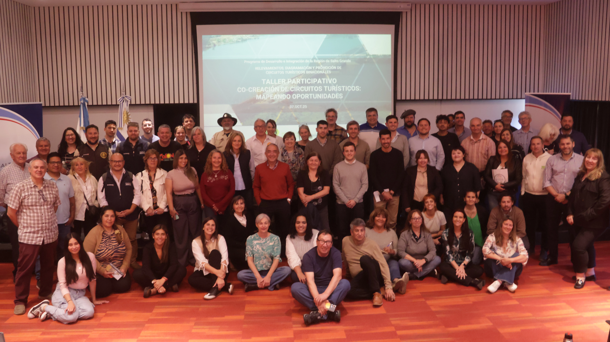

Descripción del proyecto
Se cocrearon circuitos turísticos temáticos y se diseñó un Plan de Promoción y Posicionamiento para su comercialización, integrando servicios y atractivos de la cadena de valor regional. Estos productos se desarrollaron mediante un proceso participativo que involucró a más de 300 actores del sistema turístico en la Región Salto Grande, un territorio binacional de 24.000 km² entre Argentina y Uruguay, con una población estimada de 466.000 habitantes.
← Volver al portfolio